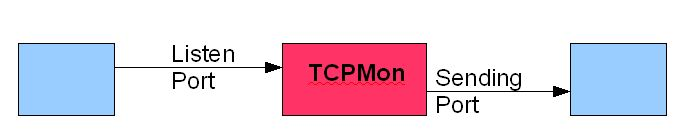
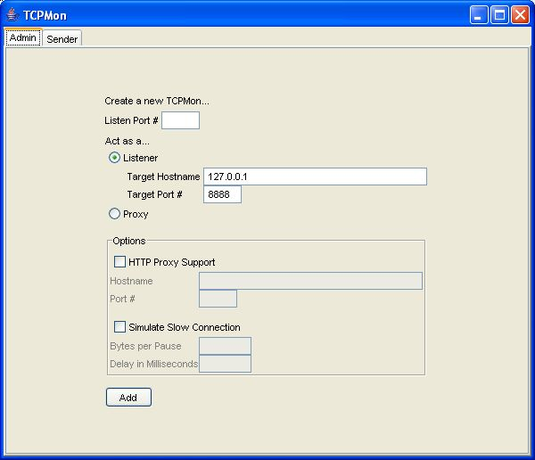
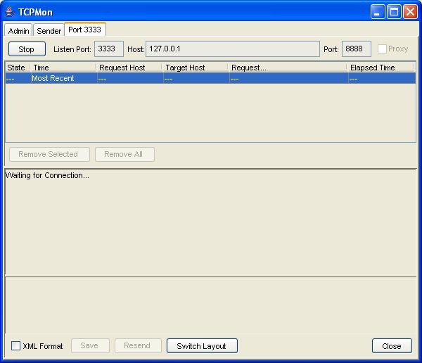
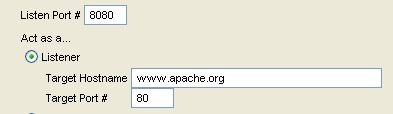
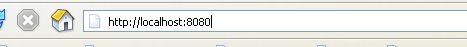
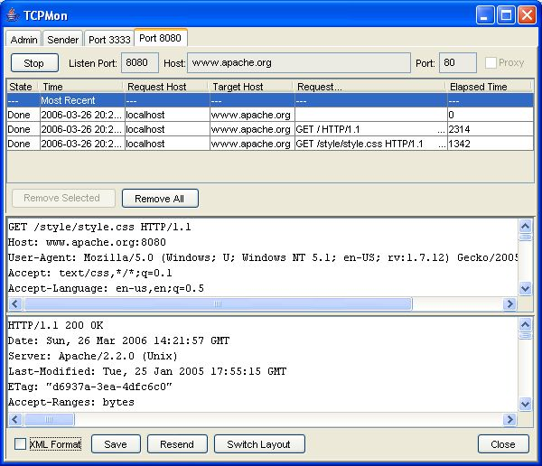
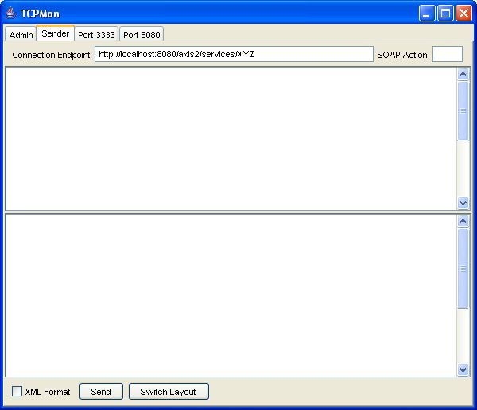
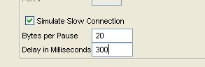

TCPMon is a utility that allows the user to monitor the messages passed along in TCP based conversation. It is based on a swing UI and works on almost all platforms that Java supports. The aim of this simple tutorial is to explain how TCPMon works and also to explain some of its features.
TCPMon has absolutely no dependencies on third party libraries. But some of the UI features rely on JDK 1.4 so TCPMon needs a JRE that is 1.4 or higher.
The most common usage pattern for the TCPMon is as an intermediary. It is called explicit since the client has to point to the intermediary rather than the original endpoint in order to monitor the messages. The following figure explains this concept.

In order to start the TCPMon in this configuration one has to provide the host name and the port for the listener in the admin screen. See image below.

Pressing the 'add' button opens up a new tab that allows the messages to be seen as in the following screen

At this point the requester should point to the listener port of the TCPMon instead of the original endpoint. Let us understand this with an example:
Say all messages passed between www.apache.org needs to be monitored.
Step 1 - Add a listener with host as www.apache.org and port as 80. Set the listener to port 8080 which may be any unused port in the local machine

Step 2 - Point the browser to localhost:8080 instead of www.apache.org.

Once the messages start flowing they can be seen in the relevant tab as seen below.

The bottom controls allow the messages to be XML formatted (useful in debugging Web services), save and resend the messages, and also to switch the layout of the message windows.
TCPMon can also be used as a request sender for Web services. The request SOAP message can be pasted on the send screen and then sent directly to the server.

TCPMon can act as a proxy. To start the TCPMon at proxy mode, just select the proxy option from the radio buttons. When acting as a proxy, TCPMon only needs the listener port to be configured.

TCPMon can simulate a slow connection, in which case the delay and the bytes to be dropped can be configured. This is specially useful in testing Web services.

If HTTP proxy support is required then that can also be set on the admin screen.
TCPMon is a simple and easy to use tool that has many benefits when developing message driven applications. It is particularly useful in developing Web services